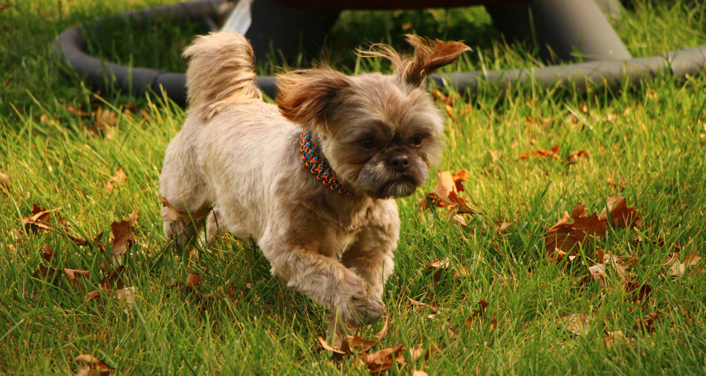
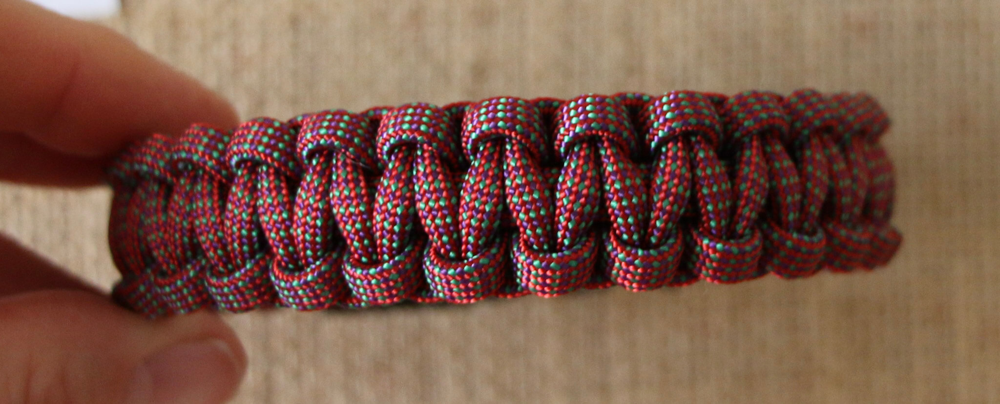

Handmade Pet Collars, Wristbands, and Key-chains
MADE WITH PARACORD
Not Just for Survival
Paracord (parachute cord) was originally used as suspension lines by paratroopers in World War II. After landing, the paratroopers would cut the paracord from their parachutes so that it could be used for other things such as tying down tarps, cargo, and tents. It is still a go to item for survival kits. It withstands the elements of nature and is made for strength. Now it comes in a large variety of colors, but it still has all the qualities that make it ideal for survival purposes.


- HANDMADE WITH HIGH QUALITY MATERIALS
- COLORS AND STYLES FOR EVERYONE
- CHOOSE THE RIGHT SIZE FOR YOU